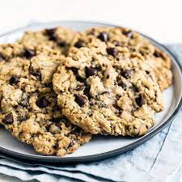

Enjoy the smell of fresh baked cookies in your house.
Ingredients:
- 1 cup butter, softened
- 1 cup packed light brown sugar
- ½ cup white sugar /li>
- 2 eggs
- 2 teaspoons vanilla extract
- 1 ¼ cups all-purpose flour
- ½ teaspoon baking soda
- ½ 1 teaspoon salt
- 2 tablespoons white sugar
- 3 cups quick-cooking oats
- 1 cup semisweet chocolate chips
- 1 cup chopped walnuts
Directions:
- Preheat the oven to 325 degrees F (165 degrees C).
- In a large bowl, cream together the butter, brown sugar, and white sugar until smooth. Beat in eggs one at a time, then stir in vanilla. Combine the flour, baking soda, and salt; stir into the creamed mixture until just blended. Mix in the quick oats, walnuts, and chocolate chips. Drop by heaping spoonfuls onto ungreased baking sheets.
- Bake for 12 minutes in the preheated oven. Allow cookies to cool on baking sheet for 5 minutes before transferring to a wire rack to cool completely.
Nutrition Facts:
Per Serving:
145 calories; protein 2.1g; carbohydrates 17.2g; fat 8.1g; cholesterol 20.5mg; sodium 107.2mg.